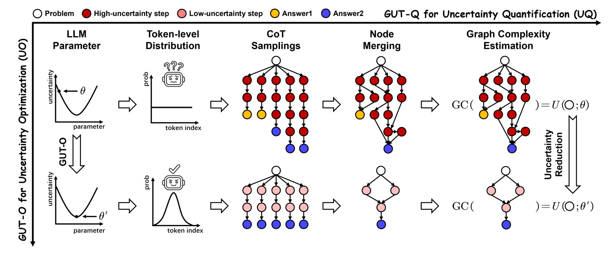
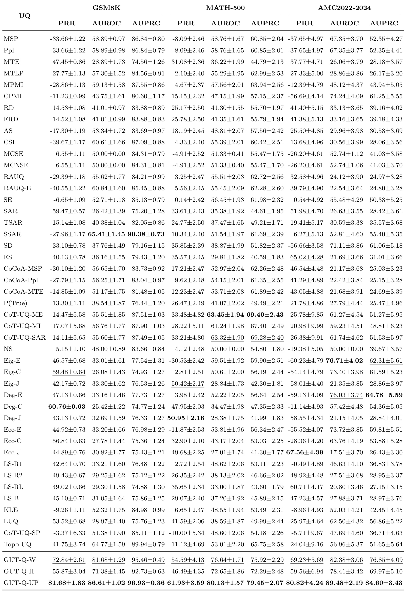
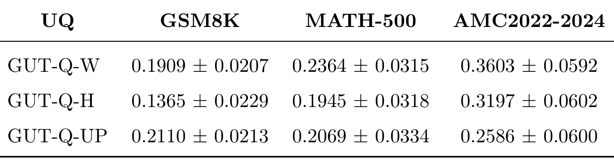
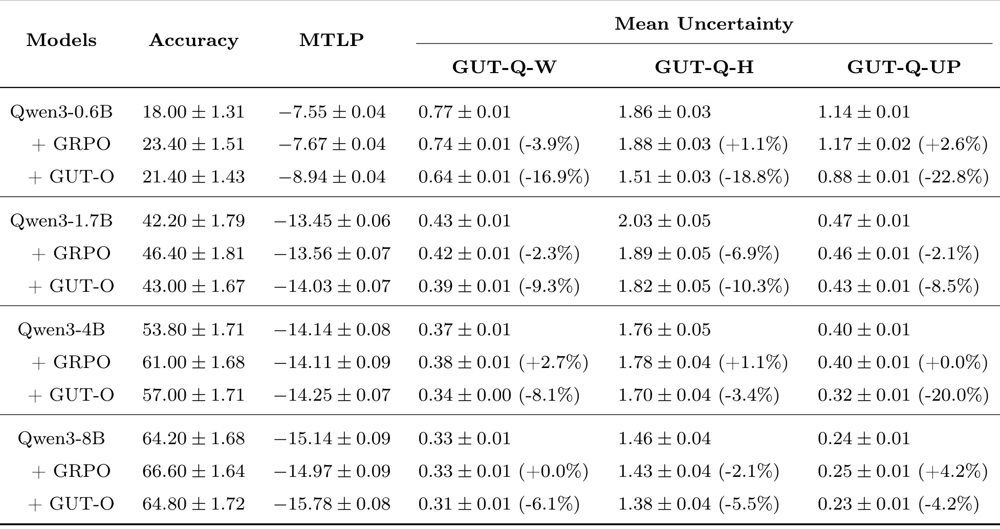
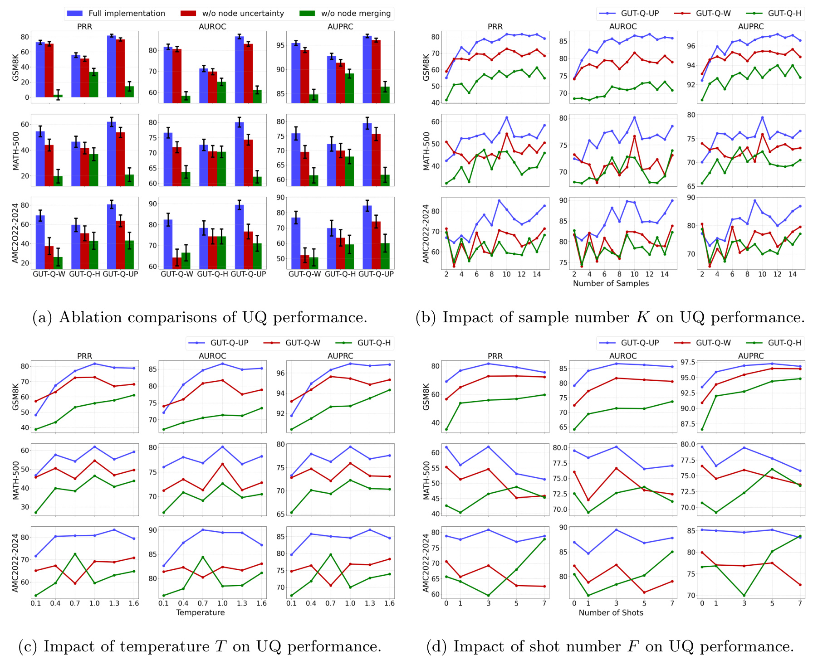
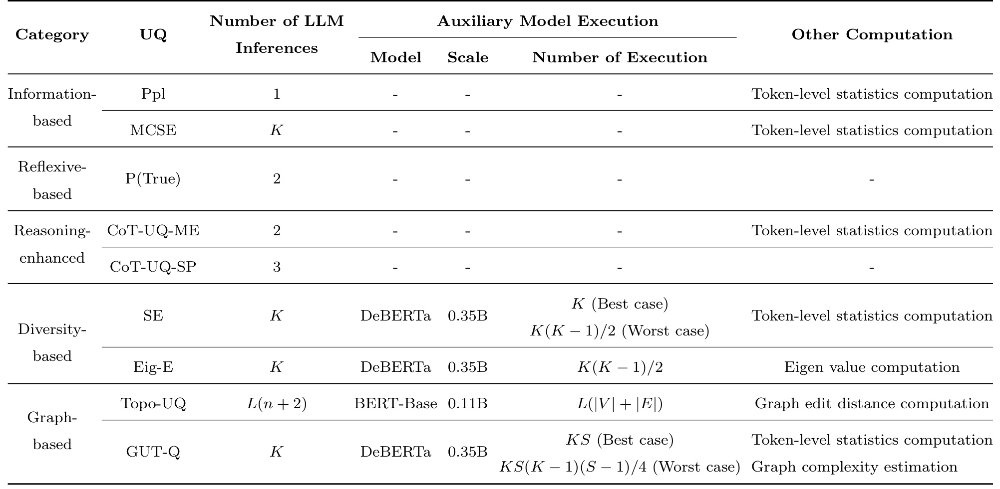
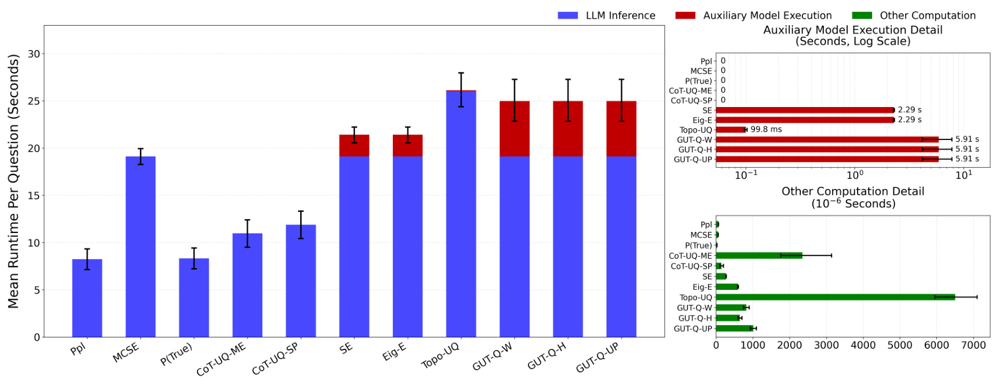
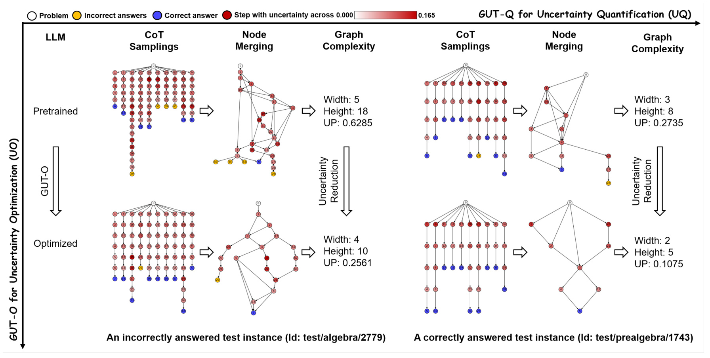

南京大学-GUT：以推理图复杂度量化不确定性，再用代理奖励进行优化
- 论文：GUT: Quantifying and Optimizing the Reasoning Uncertainty of LLMs via Graph Complexity
- 中文译名：GUT：通过图复杂度量化并优化大语言模型的推理不确定性
- 作者与机构：Shuang Liang、Xin-Yu Hu、Xiang-Jun Ou、Shao-Qun Zhang；南京大学新型软件技术国家重点实验室、智能科学与技术学院。
- 来源与时间：arXiv 预印本，v1 于 2026 年 9 月 4 日 15:40 UTC 提交；本文按首版公开时间记录，不把 PDF 内的排版日期当作首发时间。笔记日期为 2026 年 9 月 9 日。
- 论文入口：arXiv:2609.05284
- 代码/项目状态：已检查摘要页与 PDF 链接，本轮未核验到本文独立公开代码或项目页；论文使用开源基础工具不等于作者已发布完整复现代码。
- 阅读范围：正文第 1–6 节及附录 A–E；实验数值均为论文报告，本文未独立复跑。
南京大学团队在这篇论文中研究同一道题多次推理时产生的分支差异，提出用语义合并后的图结构与词元概率共同测量不确定性。论文进一步把这种测量与强化学习优化分开验证，既讨论如何识别不可靠回答，也检验减少分歧能否改善准确率。阅读重点是步骤级构图带来的诊断信息，以及图指标和训练代理之间尚未消除的差距。
将推理链仅建模为序列，会忽略每个推理步骤潜在分支，无法充分刻画词元分布和随机采样共同造成的推理不确定性。
1. 背景和问题
给相同模型相同数学题，多次采样可能得到措辞不同但计算相同的过程，也可能在某一步选择不同公式，最终得到相同或不同答案。仅检查最终答案投票比例，会把过程层面的差异压缩成一个结果频数；仅测量一条链的平均词元概率，又无法知道未走过的分支是否存在。GUT 试图同时保留局部分布信息和多条链之间的结构关系，让“不确定”成为一个可分析的推理空间属性。
这个问题与“模型不知道答案”有交集，却不完全等价。模型可能知道一个结论但采用多种合法证明，因此推理图很宽；也可能始终重复同一错误公式，图很窄而答案仍然错误。论文采用的不确定性概念首先指向同一输入下推理过程的变异程度，并以正确与错误回答的可分性检验该概念是否有实际用途。评价一个不确定性指标，不能直接把它当成正确概率，也不能把分支减少理解为知识增加。读这篇论文时必须沿着两条证据链分别判断：图复杂度能否把错误回答排到前面，以及降低其代理指标后模型是否变得更可靠。
已有方法各自保留了不同信息。信息量类指标读出词元或序列概率，成本较低，但常被回答长度、常见措辞以及模型的过度自信影响。语义熵等多样性方法先对完整回答聚类，能够消除部分同义表达差异，却不直接知道分歧发生在第几步。自我反思方法让模型报告信心，容易受到提问方式、语言风格和模型自身判断能力限制。图方法将推理空间显式展开，保留分叉与汇合，但部分前作仍需大模型自行拆题、判断或构图，成本与随机性都会回到测量链路中。GUT 的选择是用多次采样获得候选步骤，用一个较小的自然语言推断模型判断两个步骤是否双向蕴含，再把等价步骤并成节点。
这种设计值得注意的地方是“汇合”。两条推理链前面走了不同路径，中间可能得到同一个中间结论；如果一直按树结构保留，就会重复计算相同状态，夸大分支数量。反过来，仅对最终回答合并，又会丢掉中间某次分叉后来重新收敛的事实。DAG 可以表达不同前驱共享一个后继，也可以表达同一中间结论产生不同后续路径。它比原始字符串列表更接近作者要研究的语义推理空间，但仍然只是采样到的空间。有限的十条候选链不可能保证覆盖所有潜在思路，因此摘要中“全面覆盖”的表达应被理解为建模目标，不能作为有限采样具有穷尽性的保证。
论文把任务拆成 GUT-Q 与 GUT-O。前者是量化模块，输出问题级不确定性分数，用于选择性生成等下游决策；后者是优化模块，通过强化学习修改模型参数，希望它在之后生成更稳定的推理链。这个拆分允许研究者先把分数当诊断工具，不必立即把它写入奖励。量化阶段依赖图节点合并，包含离散判断，训练时又需要一个方便计算的目标，两者之间存在重要的代理关系。若跳过这一步，只说“把图复杂度当作负奖励训练”，会让读者误以为每个训练样本都先构完整图，并直接对图度量做可微优化，而论文实际采取的是平均词元对数概率代理。
实验范围也决定了结论适用范围。所谓四个模型是 Qwen3 的 0.6B、1.7B、4B 和 8B 四种规模，不能理解为四种独立架构。五个数据集覆盖小学数学、高中数学、竞赛数学、一阶逻辑和推理问答，确实比只在一个数学集上做演示更广，但仍以可核验答案的结构化任务为主。真实开放问答中的事实幻觉、工具执行失败、检索证据冲突和多轮代理状态错误，并未在本文中得到同等级验证。对于推荐与广告场景，最直接的潜在联系是复杂语言推理链的诊断，例如搜索意图解释或候选理由生成；本文没有 CTR、NDCG 或线上业务收益的实验，不能把推理分数优势转换成排序指标提升。
原文相关工作还把两类使用不确定性的路线区分开来。一类在推理时读取当前信号：例如在思维树扩展中不再展开高不确定节点，或根据词元熵、最高两个候选词元的概率差、相邻位置的概率变化，提前结束一条可疑链。它们改变的是当前问题上如何花费推理预算，主要目标是少走风险较高的路径。另一类则试图通过训练改变模型之后的分布，使同一输入产生的推理空间本身发生变化。GUT-O 属于后一类，所以不能仅凭它使用了不确定性奖励，就与推理时剪枝视为同一种方法。两者一个分配既定模型的搜索资源，一个更新模型参数，验证对象和成本周期都不同。
选择性生成也有具体的任务含义。系统先产生回答，再按分数决定保留哪些回答或交给其他环节处理，因此量化模块首先需要的是正确与错误样本的排序能力，而非重新求出正确答案。如果分数能把多数错误排在高风险端，降低覆盖率时保留集合的准确率应当提高；但这不代表被拒绝的问题获得了解决。论文由此采用多个排序与拒答相关指标检验图分数，而优化模块另外比较训练前后准确率和平均不确定性。这种设计让强判别信号与有限训练收益能够同时成立，也提示实际使用者明确收益来自拒绝更多回答、重新分配计算，还是模型解题能力确实增加。只有固定覆盖率和计算预算，后续系统对照才容易解释。
因此，本文最值得吸收的是测量粒度：从单条序列转向经过语义合并的多链图，并把图拓扑与局部概率统计组合。最需要保留的疑问是这个分数究竟混合了多少“题目难度”“推理长度”“模型表达习惯”和“真实错误风险”。这几者有相关性，却具有不同因果含义。后续实验如果只看到总分降低，尚不能判断模型是减少了无效绕行，还是压制了有价值的探索。将这些问题提前分开，才能看清 GUT-Q 的强结果与 GUT-O 较弱的正确率增益并不矛盾。
2. 方法
2.1 GUT-Q：多链采样与保序语义合并
给定问题和固定提示模板，GUT-Q 先采样多条 CoT，要求每一步只包含一个较小的推理动作，并把最终答案单独标出。每条链成为从问题根节点出发的一条路径，边表示生成顺序；末端答案也是节点。随后使用在 MNLI 上微调的 DeBERTa-large 做双向蕴含判断：步骤甲能推出步骤乙且步骤乙能推出步骤甲时，将两者视为语义等价。合并的核心作用是把语言表面的重复压缩掉，同时保留真实分叉与汇合。它不需要重新训练一个图网络，但需要稳定的步骤解析和大量辅助模型判断。原文 Figure 1 将量化过程与参数优化后的结构变化放在同一个总图里。

Figure 1 从左向右依次展示模型参数、词元分布、独立推理链、节点合并及图复杂度估计。上排的深色节点代表较高步骤不确定性，多条链经过合并后仍存在较多不同中间步骤和两个答案；下排表示经过优化的模型，候选链更易合并，最终答案也趋于一致。图中的上下关系是作者希望训练产生的效果示意，不能据此判断每个问题都会被纠正。词元分布、节点颜色和图分支分别对应局部概率信号与结构信号，它们在最终评分阶段才结合起来。原始采样链中的一条重复表述不应自动变成新的推理分支，否则分数会被语言冗余放大；但两个都提到同一变量的步骤也不能仅因词面相近而合并，否则关键算术区别会被掩盖。图右侧的低复杂度只说明合并后的图变小或节点信号降低，正确性还需要外部答案核验。这个区分对下排尤其重要：所有链收敛到同一个错误答案时，图仍可能表现得非常“确定”。
附录 Algorithm 5 进一步规定合并顺序，避免简单遍历所有节点对后产生有向环。算法逐条链处理，以已处理节点构成可合并集合；当当前步骤并入一个旧节点时，重新连接父边与子边，并从本条链的后续候选集合中排除该旧节点及其祖先。这样既保留有向无环结构，也说明合并不是任意等价类聚类：遍历次序与可合并候选集合会限制实际结果。每个节点还维护被合并步骤的不确定性集合，最后取平均作为该节点属性。这个平均避免同义步骤被采样多次就简单累加，但也会压缩同一语义在不同上下文下的概率差异。NLI 判定是确定性推理并不等于语义判断绝对正确，特别是数学等式、否定范围和省略前提依赖上下文时，错误合并会直接改变拓扑及最终分数。
2.2 GUT-Q：词元、窗口与步骤不确定性
原文第 3.2 节先给出四种词元统计选项，再把它们聚合成步骤分数。它们是可替换的节点信号，不应被误写为四个同时相加的损失项。下面使用不同符号区分词表与图节点集，保留原文的实际定义。
符号解释：$t_j$ 是实际生成的第 $j$ 个词元，$h_{<j}$ 是该位置前的提示和历史词元，$\mathcal V$ 是完整词表，$a$ 是词表中的一个候选词元，$\pi_\theta$ 是参数为 $\theta$ 的语言模型分布。四行依次为负最大概率、平均对数概率、熵、负已采样词元概率。尤其第二行对整个词表取平均，不能替换成已生成词元的平均对数似然。分布越尖锐，低概率词元的对数值通常越负，因此这种统计与常见“越接近零越有信心”的序列对数似然直觉不同。原文把较大值解释为更不确定，复现时必须统一评分方向，否则选择性拒答和 AUROC 的正负类约定可能冲突。
符号解释：$s$ 是一个含若干词元的推理步骤，$w$ 是滑动窗口宽度，$q_i$ 是从位置 $i$ 开始的局部平均，$I_d$ 是根据 Top、Head 或 Tail 策略选择的窗口索引集合，$d$ 是选择比例；$U(s)$ 随后成为对应节点的属性。Top 取最大的若干窗口，Head 和 Tail 分别关注开始和结尾。局部窗口的动机是避免一步中少量关键转折被大量低不确定词元稀释。默认节点配置采用 Avg Log Prob、窗口 6、Top-3%，并不是训练代理采用的全序列平均。实现还必须处理短步骤可用窗口不足或比例取整后集合为空的情况；论文给出了原则与配置，但未把这些工程边缘条件展开，不能在复现时默默依赖未说明的库默认值。
2.3 GUT-Q：宽度、高度与不确定性传播
第 3.3 节将节点分数放到图拓扑上，提出 W、H、UP 三种估计。W 先按最长前驱距离计算拓扑层，选节点数量最多的一层；若并列，Algorithm 1 取最早的层，再对这一层的节点分数求和。H 选择从根到叶子最长路径上的节点并求和。这里的“宽度”是特定拓扑分层里的最大层宽，并非一般偏序图中最大反链的严格图论宽度；“高度路径”按长度选择，也并不是最大不确定性权重路径。把这些限定说清楚，才能解释两种算法为什么具有直观结构意义，却未必利用全部风险信息。
符号解释：$G=(V,E)$ 是合并后的有向无环图，$p$ 为节点 $v$ 的前驱，$R(v)$ 为拓扑层；$V_w$ 为最大层宽对应的节点集合，$V_h$ 为选定最长路径节点集合，$W_u$、$H_u$ 分别为不确定性加权宽度与高度。它们保留的结构侧重点不同：很多短分支会增大宽度，一条很深的绕行会增大高度。但若重要分歧没有落在最宽层或最长路径，分数可能忽略它；有效复杂证明也可能天然较深。更进一步，原始节点统计可能为负，直接求和的数值方向必须与实际实现匹配。论文结果表显示正的不确定性数值，但并未在这些算法行中完整解释全部符号或尺度转换；这是复现审计项，不能自行添加归一化再声称完全照原文实现。
符号解释：该式是将 Algorithm 2 改写成节点递推形式，$E'$ 为给所有答案叶节点连接一个辅助汇点后的边集，$z_u$ 为前驱已经传播到的值，$\phi$ 为激活函数，$\omega$ 为共享边权，默认取 0.2；普通节点偏置是 $U(v)$，辅助汇点 $s_a$ 的偏置单独设为零。UP 沿所有连边传播信息，使分叉、汇合和局部节点信号共同影响最终读出。这是按既有 DAG 做一次前向计算，并非训练一个带新任务标签的 GNN。附录 Algorithm 4 把节点信号改放到边权、偏置改成常数，Table 4 显示两种实现通常接近。相比 W/H，UP 使用更完整的连接关系，但共享子图可能通过多条路径放大同一来源的信息，分数也依赖激活、边权及路径长度；它仍不是有概率归一化约束的正确率预测器。
2.4 GUT-O：代理奖励与组相对优化
图合并是离散操作，直接对图复杂度求模型参数梯度并不可行。第 4 节先用链级函数的期望来描述问题级目标，再选择可计算的 MTLP 作为代理。附录 A.3 明确，MTLP 使用 Avg Log Prob、窗口宽度 1 和全量位置聚合。这一点比名字更重要：它与很多系统把 MTLP 写成生成 token 对数似然均值的习惯不同。下式按论文描述写出实际代理，并用波浪号标记代理与图指标不是定义上的恒等式。
符号解释：$c$ 为一条完整候选推理链，$|c|$ 为链中词元数，$\widetilde U$ 是原文称作 MTLP 的可微代理，$c_i$ 为组内第 $i$ 条候选，$r_i$ 为对应奖励。作者希望减少代理时图不确定性也随之下降，并用正的 Pearson 相关系数提供经验支持。大数定律可以说明同一个随机变量的样本平均收敛到期望，不能单独证明任意图复杂度等于 MTLP 的期望，更不能由正相关推出干预因果保证。训练奖励提高会鼓励代理更负、分布更尖锐，但这不保证质量更高；模型也可能更加确信错误。原文保留 KL 约束以缓和偏离参考策略的风险，但不能靠正则项消除代理目标错配。
符号解释：$M$ 为同题采样组大小，$A_i$ 是组内标准化奖励优势，$l_{ij}$ 是当前与旧策略的词元概率比，$\epsilon$ 是裁剪半径，$\beta$ 是 KL 惩罚系数；$\pi_{\rm ref}$ 为固定参考模型，$D_{ij}$ 是原文给出的逐词元 KL 估计式，期望对题目和旧策略采样链求取。这里按 A.3 印刷形式保留“先对概率比取 min、再乘优势”的写法；常见 GRPO/PPO 会对两个已乘优势的项取 min，在负优势时二者不等价，复现必须核对作者代码，不能静默修正原式。训练使用组内相对奖励强化代理较低的链，再以裁剪和参考 KL 控制步幅；未展示通过图本身反向传播的实现。由此可见，GUT-O 的贡献是把一种不确定性代理接入现成强化学习框架，而非已经严格求解了非可微图复杂度最小化。
3. 实验结果
3.1 任务、采样和训练设置
评估模型均来自 Qwen3 家族，规模为 0.6B、1.7B、4B、8B，硬件为 8 张 NVIDIA RTX PRO 6000 96GB GPU。数学部分包含 GSM8K 测试集 1319 题、MATH-500 的 500 题及汇集 AMC2022–2024 的 128 题。AMC 的少样例提示从其中选取题目后移除，读者不能把初始 128 题与最终有效评估数完全等同。FOLIO 用于一阶逻辑，MMLU-Pro 用于推理问答。附录对后者答案集合写为 A–D，但并未充分解释与原基准选项设置的关系，因此这里仅使用作者报告的实验口径，不把结果宣称为官方全量排行榜复现。数学答案以 Math-Verify 核验，统计用 1000 次 bootstrap 报均值与标准差；这反映数据重采样波动，不等同于多个独立训练种子的方差。
正确性与不确定性来自不同采样设置。判断答案正误的一条链采用温度 0.7、Top-k 20、Top-p 0.8；不确定性估计另采 10 条链，温度 1.0，其余两个截断参数相同。默认采用 3-shot 提示，敏感性实验推荐值则可能不同。FOLIO、GSM8K/MMLU-Pro、MATH-500、AMC 的最大生成预算分别为 256、512、1536、2048 token。低预算导致不完整回答，高预算提高成本，作者以附录 Figure 3 的完整率曲线决定折中。由于复杂题更容易截断，分数可能混合推理失败与输出未完成两种现象；与官方长思考成绩比较时尤其不能忽视模板及预算改变。
优化实验基于 open-r1，批大小 128，同题组大小 7，训练 60 步，学习率为 $3\times10^{-6}$，余弦调度、预热比 0.1、AdamW，KL 系数 0.0005、裁剪比 0.2、温度 1.0、最大生成长度 3072。数据来源是相关任务训练集，AMC 从构建数据中随机选 20% 用于训练。论文没有充分展开所有划分与随机种子明细，尤其小规模 AMC 上的训练/评估隔离需要复现时追踪。训练阶段较长的 token 上限也不能直接与量化阶段的延迟图混在一起计算总成本。
3.2 选择性生成：强排序信号与指标审计
GUT-Q 的主要任务是根据不确定性给回答排序，使系统能优先拒绝高风险回答。比较包含 45 种白盒与黑盒方法，覆盖概率统计、语义多样性、自反思、推理增强和图结构。白盒 GUT-Q 需要词元分布，不能把同表中的黑盒方法当作具备完全相同接口资源。原文 Table 2 给出 4B 上三个数学数据集的 PRR、AUROC、AUPRC，三种指标按作者约定均为越大越好。

Table 2 的每组列是一个数据集，每组内依次为 PRR、AUROC、AUPRC，上半部分为基线、最下面三行为 W、H、UP。GUT-Q-UP 在 GSM8K 上得到 81.68±1.83、86.61±1.02、96.93±0.36；MATH-500 为 61.93±3.59、80.13±1.57、79.45±2.07；AMC 为 80.82±4.24、89.48±2.19、84.60±3.43。对 MATH-500 来说，表中最强非 GUT AUROC 是 CoT-UQ-ME 的 63.45，UP 高出 16.68 个百分点；AUPRC 同一基线为 69.40，UP 高出 10.05 点。对 GSM8K，最强非 GUT AUROC 为 SSAR 的 65.41，UP 高出 21.20 点。这样的差距支持“图结构提供额外错误排序信号”，并非只是把一个已有指标稍作调参。UP 也优于自己的 W/H：MATH-500 三者 AUROC 分别为 80.13、76.64、72.65，说明完整连接传播比单独选最大宽度层或最长路径有效。
这张表还提醒读者不要只抄最优数字。若干基线的 PRR 和 AUROC 排序看起来很不一致，例如 GSM8K 的 SAR 为 PRR 59.47、AUROC 26.42，而 SSAR 为 PRR -27.96、AUROC 65.41。归一化拒答指标、正负类定义和评分方向都会影响解释；原文没有在主表旁完整展开每个基线的符号转换，复现时应首先核对这些接口，而非直接据此判断已有方法彻底失效。论文跨四模型五数据集汇总称 PRR、AUROC、AUPRC 平均领先 11.79%、13.33%、9.66%，这里保留为作者的汇总描述，不能自动解释为错误率分别下降这些比例，也不把各格相对增益和绝对点差混为一谈。全部跨任务矩阵见附录 Tables 9–12；其中 0.6B 在 AMC 准确率较低，有些 bootstrap 样本仅含错误类，AUROC 不再有定义，因此标准差出现 nan。这是小样本评价的不稳定性证据，不能删掉后再描述所有模型表现稳定。
还可以从表内比较节点传播相对宽高投影的增量。竞赛数学上，传播版本的三项分数都超过宽度版本，高度版本则进一步落后，说明只抓最长一条链不足以描述多分支错误。较简单的小学数学上也保留相同的内部排序，支持连接结构的作用并不限于最长推理样本。不过，表中的加粗和下划线分别在基线组与作者方法组内评选，读者不能只数加粗格子的数量来判断全表优势。实际阈值应用还要选择拒答比例；曲线面积较高，并没有给出某个固定业务覆盖率下的错误数量，所以这些指标首先支持离线比较，而非直接确定生产阈值。
3.3 GUT-O 的代理有效性与准确率代价
量化成功并不自动证明优化目标正确。原文先比较 MTLP 代理与三个图分数的 Pearson 相关系数，再报告训练前后的准确率和平均不确定性。Table 1 的相关性是四个规模模型的平均值，能提供方向线索，但不包含干预实验的因果识别。

Table 1 的行分别是 W、H、UP，列为三个数学任务。W 的 PCC 为 0.1909、0.2364、0.3603；H 为 0.1365、0.1945、0.3197；UP 为 0.2110、0.2069、0.2586。所有均值为正，但强度总体偏弱，只能说明数据中存在同向趋势，不能把代理当成图分数的近似等价量。附录 Table 15 拆开模型后更清楚：4B 在 GSM8K 上 W/H/UP 分别仅为 0.0764、0.0342、0.0706；0.6B 在 MATH-500 的 UP 相关性是 0.0734。这些数字削弱了“任何题目都可以通过降低代理稳定降低图复杂度”的解释。一个可行的工程使用方式是把代理当探索性正则或辅助目标，并在独立留出集同步检查正确率、拒答曲线和图分数变化。若只优化训练奖励并把奖励改善当作系统可信度改善，容易在误设代理上得到看似很好的数字。尤其这里没有证明训练后的相关性仍保持，更没有证明模型分布变化后，原有分数阈值仍然校准。
跨列阅读时，宽度代理相关性从小学数学到竞赛数学逐渐增强，高度也呈相同趋势，而传播版本并没有同样明显的单调幅度。这个差异意味着代理对不同图读出方式的代表性并不一致，不能为三个量统一设定同一个可互换解释。相关性还可能受题目难度影响：更难的题目既产生更复杂的图，也改变词元概率分布，两者共同变化并不说明一个是另一个的充分成因。表中的均值与标准差属于作者的统计报告，它没有提供按题型、链长度或答案正确性分层后的条件相关性。若未来发现相关主要来自难题与简单题的差别，那么在同等难度题目内根据代理选链，可能得不到同样效果。反过来，即使相关性数值较小，也不能仅据此断言代理训练完全无用；需要结合下一张训练对照表，检查干预后哪些指标真的发生改变。这样才能把观察关联、训练效果和正确性改善放在各自能够支持的证据层级上。

Table 3 将准确率、MTLP 及三种平均图不确定性并列，是理解论文训练结论的关键证据。4B 原始准确率为 53.80±1.71，GUT-O 后为 57.00±1.71，增加 3.20 个百分点；普通 GRPO 为 61.00±1.68，增加 7.20 点。与此同时，GUT-O 的 UP 分数由 0.40 降至 0.32，下降 20.0%，而 GRPO 的 UP 仍为 0.40。也就是说，GUT-O 在自己关心的稳定性指标上更好，GRPO 在任务准确率上更好，这种目标差异本身就是结果，而非需要回避的细节。0.6B 准确率 18.00→21.40，GRPO 为 23.40；1.7B 为 42.20→43.00，GRPO 为 46.40；8B 为 64.20→64.80，GRPO 为 66.60。四个规模的 MATH-500 正确率均未超过 GRPO，不能把“降低图复杂度”写成全面更优的推理训练方法。
原文汇总称平均不确定性下降 13.95%、准确率提高 1.93%。附录 C.2 明确准确率讨论采用绝对变化，所以后一个值应理解为作者报告的平均准确率点差，不能误说相对提升或每个模型都提高同样幅度。全量 Table 14 也给出边界：0.6B 在 AMC 的准确率 9.09→9.09，没有提升，但 UP 从 5.72 降到 4.16，下降 27.3%。4B 在 AMC 的 39.67→44.63 较明显，且超过表中 GRPO 的 42.98，但该表基线 39.67 与 Table 5 的 38.02 不同，应按各表局部对照，不做跨表拼接。MMLU-Pro 4B 为 60.83→62.08，普通 GRPO 为 67.08；GSM8K 8B 为 89.61→89.76，仅增 0.15 点。训练指标下降相对一致，正确率收益却因任务和模型规模而异，正是代理学习应当保留的现实边界。
表中的变化百分比需要相对于各模型自己的起点阅读。小模型的传播分数起点较高，优化后仍高于较大模型，因此“下降比例更大”不等于“最终风险更低”；不同规模的分数也未证明具有统一校准尺度。准确率一栏则应保持绝对百分点口径，不能把不确定性的相对变化百分比直接拿来与准确率相减。标准差同样限制了细微差距的解释：较大模型准确率的改善幅度小于表中单次重采样标准差，原文未提供针对该点差的配对显著性检验，所以稳妥说法是报告均值有所上升，而非证明稳定提高了解题能力。训练目标造成的取舍可以在同一表中直接观察，但其统计确定性和跨种子稳定性仍需额外实验。
3.4 消融、采样与合并敏感性
作者移除节点不确定性或移除语义合并，判断性能到底来自概率信号还是图构造；同时改变采样数量、温度和提示中的示例数量，观察构图输入的变化是否影响结论。

Figure 2 左上面板以颜色比较完整实现、去掉节点不确定性、去掉节点合并；其他三个面板分别以采样数、温度、few-shot 数量为横轴，以 PRR、AUROC、AUPRC 为评价轴，并区分三个数学数据集及 W/H/UP。对 UP 而言，去掉节点合并造成的下降比去掉节点分数明显，表明它相当一部分优势来自语义去重后的连通结构。对 W/H，两个组件都比较重要，因为它们只对某个局部截面或路径求和，少一个信息来源更容易退化。这并不意味着节点概率可以永久删除：此处只是特定设置的经验消融，不能从较小下降推出所有模型都只需纯拓扑。采样曲线往往先改善再波动或趋稳，说明增加候选链有助于发现分歧，却不是越多越稳定；较难的 AMC 小样本也带来更明显抖动。主文为 4B 推荐采样 9 条、温度 1.0、5-shot，但主表为了和基线公平比较采用的是 10 条和默认 3-shot，不能把推荐最优配置写成所有结果的实际配置。
附录进一步给出分模型建议：1.7B 推荐 12 条，8B 和 0.6B 推荐 11 条；温度方面 8B 推荐 1.6，1.7B 和 0.6B 推荐 0.7；few-shot 方面 8B/4B 推荐 5、1.7B 推荐 3、0.6B 推荐 7。它们说明图指标不是与解码分布无关的固有模型属性，换温度等于换了被测量的推理空间。Figure 9 还比较双向蕴含、单向蕴含且不矛盾、仅不矛盾三种合并标准，整体评价相近。但宽松标准产生的节点不一定具有相同语义，指标相近只说明当前数据上的最终排序较稳健，并非人工审核过每条合并边。复现时有必要抽样审核“同一数字、不同条件”和“否定与不确定”这样的高风险节点对，防止 NLI 把数学错误压缩成表面一致性。
3.5 实际成本与长推理扩展边界
GUT-Q 的成本由语言模型多链采样、NLI 节点比较以及最后的图计算组成。作者认为第一部分主导，但第二部分会随链长增长；把三个环节分开才看得出它适合离线审计还是实时请求。

Table 8 按方法类型列出语言模型调用次数、辅助模型规模与次数，以及其他计算。Ppl 只需一条链，SE 与 GUT-Q 都需 K 条链；SE 对完整链比较，而 GUT-Q 对步骤比较，NLI 次数在作者分析里最好为 KS，最坏为 KS(K−1)(S−1)/4，其中 S 是每链平均步骤数。SE 最坏为 K(K−1)/2，因此不能只看二者语言模型采样次数相同就说复杂度完全一样。比如把短数学题迁移到数十乃至上百步工具推理，步骤数增长会让 NLI 开销上升得更快；链内文字更长也会增加每次 NLI 的输入成本。表中使用 0.35B DeBERTa，小于主语言模型，但它并非免费，且大量小调用的调度、显存占用和批处理效率都会影响端到端延迟。最后的 W/H 拓扑遍历或 UP 前向通常较轻，优化图算法本身未必能显著降低总成本。表里“其他计算”的量级与模型推理不同，复现应独立记录 token 数、NLI 对数和延迟，而不是把图计算快误写成整个方案低成本。
从表内的两种辅助比较对象还可看出长链迁移的风险来源。语义熵把整条候选回答当作聚类单元，主要增加的是回答之间的配对；本方法把每条链拆开后，既增加待比较单元数量，也使可合并位置受到前后顺序限制。较长的链不只多生成词元，还可能留下更多互不等价的步骤，使实际运行更接近表列出的坏情形。所有步骤很容易并到同类的好情形，适合描述重复表达较多的输入，却不能作为开放式复杂推理的默认假设。实际实现可以通过批处理辅助判断来降低调度开销，但这只是减少同批执行的等待时间，并不改变需要核验的节点对集合。若裁剪候选比较来节约成本，则又改变了最终图结构，必须重新验证不确定性排序；论文给出的原始效果不能直接继承给这种加速版本。

Figure 4 使用 Qwen3-4B、MATH-500、K=10，左侧堆叠柱分别为语言模型、辅助模型和其他计算的每题耗时；右侧放大辅助执行时间与微秒级其他计算。GUT-Q 三个变体总时间从图读约为 25 秒，SE/Eig-E 约为 21–22 秒，Topo-UQ 约 26 秒；这些近似读数不应当成精确延迟基准。右上明确标出的辅助模型时间，GUT-Q 为 5.91 秒，SE/Eig-E 为 2.29 秒，Topo-UQ 为 99.8 毫秒。作者强调批并行使 GUT-Q 的采样部分约为单链 Ppl 的 2.5 倍，而不是 10 倍。这个结论反映硬件有并行余量时的墙钟收益，不能推导总生成 token、GPU 运算或服务吞吐只增加 2.5 倍。在高并发线上场景，这些候选链会竞争原本可服务其他请求的资源；在离线低负载分析中，批并行则较容易利用空闲算力。本文没有跨机器、跨序列长度、并发饱和或尾延迟测量，因此适合说“在作者设置中与较强多样性/图方法同量级”，不适合说适用于任意低延迟生产链路。
进一步拆开右侧两个尺度，会发现辅助模型执行用秒表示，而最下面的其他计算采用微秒单位；它们即使柱长相近，也不能直接比较绝对成本。三个图变体共享采样与合并流程，因此总体柱高接近，差别较小的图读出计算未成为主要瓶颈。选择宽度还是传播版本时，不能预期仅靠简化最后一次图遍历就节约大部分响应时间。左侧柱上的误差线表示作者设置中的运行波动，不能替代线上服务的尾延迟分位数；图中也没有负载升高之后的排队时间。对于需要同步等待全部候选链的请求，最慢链的生成或步骤解析可能拖延最终决策，这属于由批量工作方式引出的待测问题，本文没有测量证明已经解决。因此，复现实验应先匹配同样的批量和硬件设置，再分别测试空闲设备和饱和设备下的成本变化。
3.6 个案：更短的图仍可能答错
附录 E 选取两道 MATH-500 题，对比同一模型优化前后的采样图和合并图，并逐页列出节点内容。这个材料能帮助读者把抽象图分数连回真实推理语言，但属于选择性个案，不能代替总体统计。

Figure 10 左侧是被判错的代数题，右侧是被判对的两位质数题，黄色与蓝色答案节点区分错误和正确候选。左侧优化前宽度 5、高度 18、UP 0.6285，优化后为 4、10、0.2561；右侧宽度 3→2、高度 8→5、UP 0.2735→0.1075。图中的宽高为了展示结构移除了节点不确定性权重，不能和 Table 3 的加权 W/H 数值比较。最有价值的观察是左下仍被标为错误实例：图变短、分歧变少，并没有保证最终被评分的那次回答正确。附录节点内容显示模型会在根式三次展开中反复怀疑不存在的交叉项，甚至在已经得到正确展开后继续引入错误修正；优化后这类绕行减少，但仍有不正确答案分支。这与“减少推理不稳定性”的主张相符，却限制了“自动修复事实/数学错误”的解读。右侧质数例子中，合法候选为 17、53、71，模型有时在已经列对集合后给错计数，表明最终答案错误既可能来自中间知识，也可能来自后续自我改写。对工程诊断而言，图有助于定位何时偏离；对强制决策而言，还需外部核验器判断路径内容，而非只选择最小图。
这两个案例还有一个测量对象上的区别：图展示多次候选采样形成的空间，实例是否判对却依据预先规定的回答生成与答案核验流程。于是，一幅图中出现蓝色正确答案节点，并不意味着那次用于评估的回答一定正确；同理，存在少量黄色错误分支也不意味着最终回答一定错误。读图时应先看整幅图所属的实例标签，再看候选集合内部的答案分布，避免把多候选覆盖率当成单次准确率。作者选取一错一对，可以直观展示两种情形，但没有说明它们代表全部失败类型的频率。特别是语义合并之后节点减少，既可能因为无效自我修正减少，也可能因为模型表达更相似；个案只能提出这样的机制解释，尚不足以区分每种解释的贡献比例。
4. 总结
4.1 我的判断
GUT-Q 的研究价值相对清楚：它把多次采样中的步骤等价关系变成可计算 DAG，利用节点分布统计与拓扑共同构建错误排序信号。主表中 UP 对同族模型数学回答的 AUROC 优势足够大，值得做独立复现。相比只看最终答案多样性，步骤级汇合与分叉能够解释“哪里开始不一致”，这一诊断粒度对调试推理系统有吸引力。W/H 提供了较容易理解的结构投影，UP 则以较完整的连通信息换取更好判别效果，三者并不是可以不加区分地统称为“图熵”的同一个算法。
GUT-O 的证据更适合作为辅助正则探索。它降低所测图指标的效果较一致，但准确率提升更小，MATH-500 四个规模均落后于普通 GRPO。论文自己的 AMC 零提升例子进一步说明，低不确定性不是正确性的充分条件。从技术路线选择看，应先把 GUT-Q 作为离线诊断与选择性拒答候选，再考虑是否把代理写入训练目标；不要因为训练奖励易于实现，就跨过分数校准和错误类型检查。
4.2 复现边界与风险
第一，代理关系较弱且随模型变化，部分 PCC 接近零。仅凭正相关无法保证训练后仍维持相关，更不能证明图指标与正确性同步改善。第二，节点等价依赖通用 NLI；数学符号、隐含前提与否定关系上的误合并可能压缩真实错误，合并后图变简单有时只是测量器漏掉分歧。第三，量化需要多条完整 CoT 和词元分布，普通只给文本的 API 不一定提供足够接口，实时系统还要承担 NLI 比较成本。第四，四种规模来自同一家族，短生成预算、few-shot 模板与具体答案核验器都会改变结果，外推到开放问答和工具代理需要新证据。第五，论文符号存在需核对的细节：Avg Log Prob 与正图分数之间的尺度处理、打印版裁剪目标与常见 GRPO 形式差别、不同表格基线变化，都应纳入复现问题清单；目前未核验到独立作者仓库，不能把这些实现分歧当成已解决。
对搜索、广告或推荐研究，较可行的迁移是分析语言模型生成的解释、查询分解或复杂规则推理过程，记录分歧是否落在最终候选决策之前。这里的收益假设是发现脆弱环节，尚不是业务效果结论。排序中多个合理兴趣解释本来可以共存，盲目压低图宽度可能损失用户兴趣多样性；如果未来用于多意图查询，就要区分“多个正确意图”与“相互矛盾的推断”，给不同分支类型不同处理。系统首先应保留答案核验和证据检查，图分数只作为附加观察量。
4.3 后续跟进
优先复现一个固定模型、固定预算的完整拒答曲线，并统一所有基线的分数方向与正负类，确认优势没有被指标接口放大。其次，在不改变正确性标签的前提下单独改变表述长度和步骤切分粒度，检验分数是否过度响应形式变化；同时人工审核一批 NLI 合并对，测出错误合并与漏合并对 UP 排序的影响。第三，将普通 GRPO、纯代理优化、正确性奖励加代理约束放在相同训练 token 预算下比较，报告准确率、图不确定性、校准误差和拒答覆盖率的完整权衡，而非只选其中一个指标。最后，在长链与高并发条件下记录 NLI 对数、总 token 和尾延迟，验证多链诊断能否在真实资源约束下保留足够收益。只有这些检查形成一致证据，才值得从论文测量原型推进到生产决策。